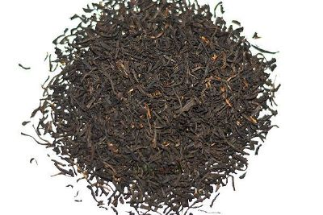
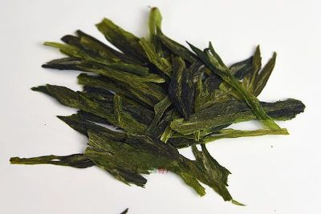
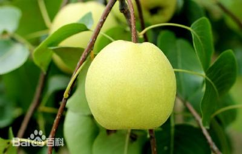
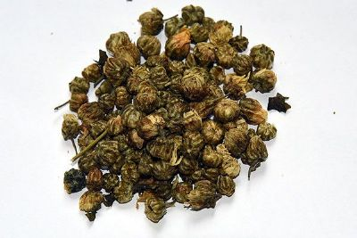
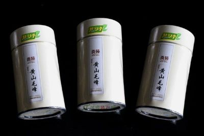

祁门红茶，是我国传统工夫红茶的珍品，它创制于光绪年（公元1875年），已有百余年的生产历史，主产于安徽省黄山市祁门县，祁门红茶条索紧秀、金毫显露，色泽乌黑鲜润泛灰光，俗称“宝光”；香气浓郁高长，似蜜糖香，又蕴藏有兰花香，滋味醇厚，味中有香，香中带甜，回味隽永，汤色红艳，叶底嫩软红亮。国际市场把“祁红”与印度大吉岭茶、斯里兰卡乌伐的季节茶，并列为世界公认的三大高香茶。祁门红茶品质超群，被誉为“群芳最”，这与祁门地区的自然生态环境条件优越是分不开的。祁门地处安徽南端，黄山支脉由东向西环绕，西北有大洪岭和历山，东有楠木岭，南有榉根岭，山地面积占总面积的90%，平均海拔高度为600米左右，茶园80%左右分布在海拔100~350米的峡谷地带，森林面积占80%以上，早晚温差大，常有云雾缭绕，且日照时间较短，构成茶树生长的天然佳境，酿成“祁红”特殊的芳香厚味。 
六安瓜片茶已有悠久历史。据《六安州志》记载；“茶之极品，明朝始入贡”。说明六安瓜片早在明代已很出名了。特别是近几年来，六安瓜片茶得到迅速发展，机械加工炒制获得成功， 制茶量成倍增长。 六安瓜片茶的采制与一般烘青绿茶有所不同。采摘期一般在“谷雨”前后。采摘时须待顶芽 开展，嫩叶生长成熟，这样可使茶中有益成份含量提高。六安瓜片茶的加工技艺精细。采摘 回的茶叶要经“扳片”（即将芽、叶、茎拆散），然后分别炒制，以使产品叶质均一，烘焙均 匀。杀青要经过“头锅”、“二锅”两次完成。但不经“揉捻”。烘制、挑后即可趁热密封包装。这种茶的顶芽制品叫“银针”；第一叶制品称“瓜片”；第二、三叶制品称“梅片”；嫩 茎制品叫“针把”，是副品茶。 六安瓜片是一种片状烘青绿茶，因产地不同，各有特色。茶外形平展，茶芽肥壮，叶缘微翘， 叶质柔软，大小匀整。色泽翠绿有光，香气清高，滋味鲜醇，回味甘美，汤色清澈晶亮，叶 底嫩绿。齐云山产茶又有“内山”和“外山”之别，“内山”是指黄石、里冲等地，“内山” 茶优于“外山”。

太平猴魁是中国历史名茶，创制于1900年。1915年，太平猴魁在巴拿马万国博览会上荣获金质奖章。新中国建立后，1955年， 太平猴魁又被评为全国十大名茶之一。 【产地】 太平猴魁产于黄山北麓的黄山区，由于产地低温多湿，土质肥活，云雾笼罩，故而茶质别具一格： 茶芽挺直，肥壮细嫩，外形魁伟，色泽苍绿，全身毫白，具有清汤质绿、水色明、香气浓、滋味醇、回味甜的优秀特征，是尖茶中最好的一种。 曾在1915年的巴拿马万国赛会上，获得金质奖章和奖状；20世纪 30年代曾在玻利维亚等国展销；1979年在我国出口贸易中博得五大洲客商好评。 【品质特征】 太平猴魁的品质特征：其成品茶挺直，两端略尖，扁平匀整，肥厚壮实，全身白毫，茂盛而不显，含而不露，色泽苍绿，叶主脉呈猪肝色，宛如橄榄；入杯冲泡，芽叶徐徐展开，舒放成朵，两叶抱一芽，或悬或沉；茶汤清绿，香气高爽，蕴有诱人的兰香，味醇爽口。其品质按传统分法：猴魁为上品，魁尖次之，再次为贡尖、天尖、地尖、人尖、和尖、元尖、弯尖等传统尖茶。 
砀山酥梨是我国果品中的名产。它以果实硕大，黄亮美色，皮薄多汁，肉多核小，甘甜酥脆等特点，驰名海内外。 砀山酥梨含有糖份，矿物质，有机酸和多种维生素，营养极为丰富，是不可多得的果中佳品，除鲜食外，还可加工成梨酒、梨膏梨糖和罐头等，是食品工业的重要原料。梨汁、梨膏具有去热清痰止咳润肺等药用价值，是人们日常十分喜爱的辅助药剂。砀山酥梨的主要品种有：金盖酥、白皮酥、青皮酥和伏酥等当家品种。其中以金盖酥品种质量最佳。1987年砀山全县产梨一亿多斤。 砀山酥梨不仅畅销于国内市场，在国际市场上也很受欢迎。从1958年砀山酥梨开始进入国际市场以来，年出口量均在400万斤以上，销运40多个国家和地区。品种来源：原产于安徽省砀山，是古老的地方优良品种。该品种有4个品系，即白皮酥、青皮酥、金盖酥、伏酥。以白皮酥品质最好。品种特性：果实近圆柱形，顶部平截稍宽，平均单果重250克，大者可达1000克以上；果皮绿黄色，贮后黄色；果点小而密；果心小，果肉白色，中粗，酥脆，汁多，味浓甜，有石细胞；可溶性固形物11％～14％，可溶性糖7.35％，可滴定酸0.10％，维生素C 2.21毫克/百克。树势强，萌芽率为82％，一般剪口下多抽生2个长枝。定植后3～4年开始结果。以短果枝结果为主，腋花芽结果能力强。短果枝占65％，腋花芽20％，中果枝7％，长果枝8％，丰产性好，管理好丰产、稳产。适应性极广，对土壤气候条件要求不严，耐瘠薄，抗寒力及抗病力中等。在辽宁兴城9月下旬成熟，果实发育天数135天，营养生育天数为207天。 适栽范围：安徽、山东、山西、江苏、辽宁、陕西、甘肃陇东、新疆南部和云南昆明均有栽培。 
菊花，别名“延寿客”，有抗菌、抗病毒、消炎、利尿、抗衰老、解热作用。入药用的菊花是菊科植物菊花的干燥头状花序，主产于浙江、安徽、河南等地。 滁菊是我国四大名菊(滁菊、杭菊、怀菊、亳菊)之一（见《本草纲目》）。 主要产于安徽滁州，是菊花中花瓣最为紧密的一种。滁菊偏于平肝阳，常用于治疗肝阳上亢所致的头晕目眩等症，滁菊含有黄酮，挥发油，氨基酸和微量元素等有效成份。滁菊中挥发油的成份种类高于其他菊花；富含人体必须的蛋氨酸、谷氨酸、赖氨酸等八种氨基酸；它还含有十种天然微量元素，适于补充人体微量元素的不足。其中锌，硒等易被人体吸收，可促进细胞分裂，延缓肌体衰老，从而起到养颜益寿之功效。滁菊茶属天然绿色饮品。花蕊金黄，花瓣玉白，有“金心玉瓣、翠蒂玉香”之称，是药用菊花中的保健珍品，具有良好的药用保健价值。滁菊可清风散热、舒筋活血，对高血压、冠心病有保健疗效；并可明目护肝，排毒养颜，增强人体免疫功能 
黄山座落在安徽歙县、太平、休宁、黔县之间，巍峨奇特的山峰，苍劲多姿的劲松，清澈不湍的山泉，波涛起伏的云海，号称黄山“四绝”，引人入胜。明代著名的旅行家徐霞客，把黄山推为我国名山之冠，留下了“五岳归来不看山，黄山归来不看岳”的名言。黄山地区，由于山高，土质好，温暖湿润，“晴时早晚遍地雾，阴雨成天满山云”，云雾缥缈，很适合茶树生长，产茶历史悠久。据史料记载，黄山茶在400余年前就相当著名。《黄山志》称: “莲花庵旁就石隙养茶，多清香冷韵，袭人断腭，谓之黄山云雾茶”。传说这就是黄山毛峰的前身。《徽州府志》记载: “黄山产茶始于宋之嘉佑，兴于明之隆庆”。真正的黄山毛峰茶何时创制，据《徽州0资料》记载，起源于清光绪年间(1875年前后)，当时有位歙县茶商谢正安(字静和)开办了“谢裕泰”茶行，为了迎合市场需求，清明前后，亲自率人到充川、汤口等高山名园选采肥嫩芽叶，经过精细炒焙，创制了风味俱佳的优质茶,由于该茶白毫披身，芽尖似峰,取名“毛峰”，后冠以地名为“黄山毛峰”。 